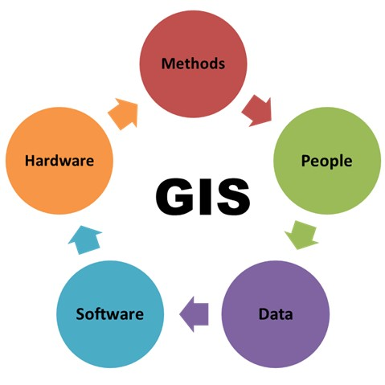
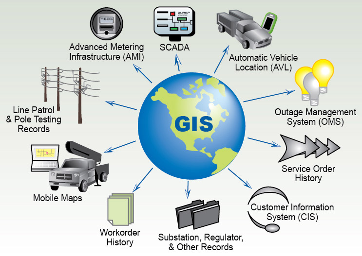
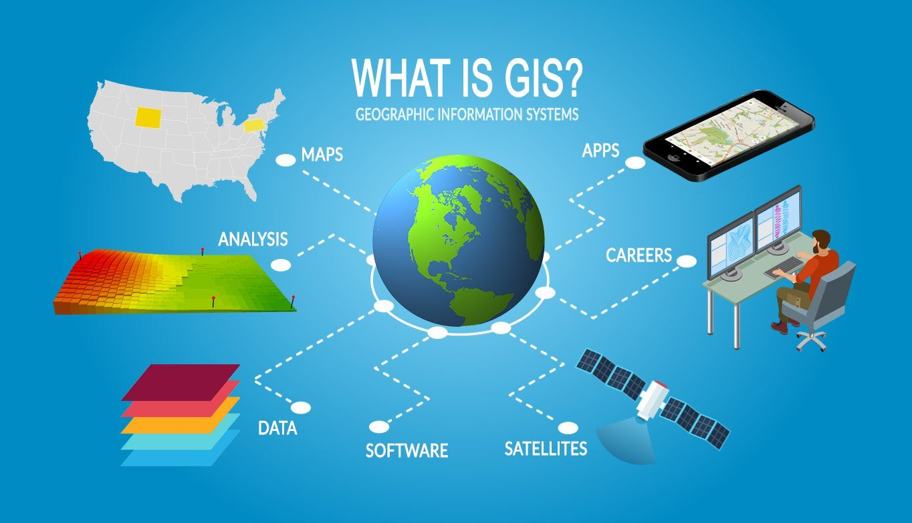

It is a computer-based system that collects, maintains, stores, analyzes, outputs and distributes spatial data and information. These systems collect, input, process, analyze, display and output spatial and descriptive information for specific purposes, and help in planning and decision-making regarding agriculture, urban planning and housing expansion, in addition to reading the infrastructure of any city by creating what are called layers.
Geographic Information Systems (GIS) help answer many questions related to identification, such as what is the agricultural pattern and what types of crops are suitable for cultivation in a given agricultural unit. They also support measurements like what is the area and coordinates of the units and what is the diameter of the irrigation pipe used. In terms of location, where is a specific agricultural unit located and conditions, which irrigation pipes have a diameter of 300 mm in a certain area. As well as change, what was the change in soil salinity from 1965 to 2006 and spatial distribution, what is the relationship between population distribution and water sources. Finally, hydrological scenarios, what happens if the flow rate of irrigation water in the pipe increases.
Image illustrating some definitions

5 components

Fields of (GIS)

(GIS) Technologies